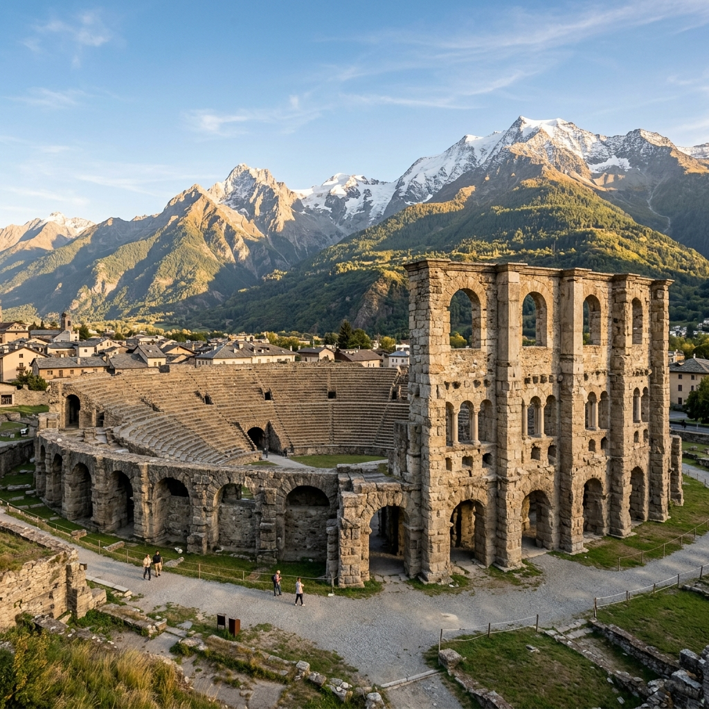

Le saviez-vous ?
L'amphithéâtre romain d'Aoste est caché à l'intérieur d'un couvent. Contrairement au Colisée de Rome ou à l'amphithéâtre de Nîmes, ses vestiges sont englobés dans les murs du couvent des sœurs de Saint-Joseph.
Pour le visiter, il faut sonner à la porte du couvent et demander la permission aux religieuses !

Vue de l'amphithéâtre avec les Alpes majestueuses
Localisation
L'amphithéâtre se trouve au cœur du centre historique d'Aoste, Via Anfiteatro, dans le secteur nord-est de l'ancienne cité romaine d'Augusta Praetoria Salassorum, en Vallée d'Aoste, Italie.
Avec 15 000 places pour une ville de 3 000 habitants, il pouvait accueillir 5 fois la population de la cité !